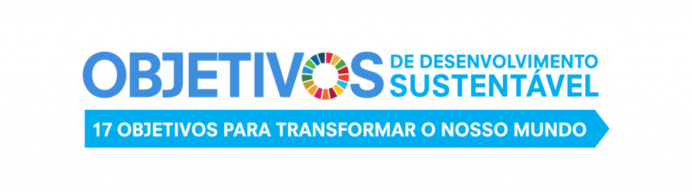

Os Objetivos de Desenvolvimento Sustentável no BrasilOs Objetivos de Desenvolvimento Sustentável, também conhecidos como Objetivos Globais, são um chamado universal para ação contra a pobreza, proteção do planeta e para garantir que todas as pessoas tenham paz e prosperidade. Esses 17 Objetivos foram inspirados no sucesso dos Objetivos de Desenvolvimento do Milênio (ODM), incluindo novos temas, como a mudança global do clima, desigualdade econômica, inovação, consumo sustentável, paz e justiça, entre outras prioridades. Os objetivos são interconectados - o sucesso de um ODS envolve a resposta a temas que estão associados a outros objetivos.  |